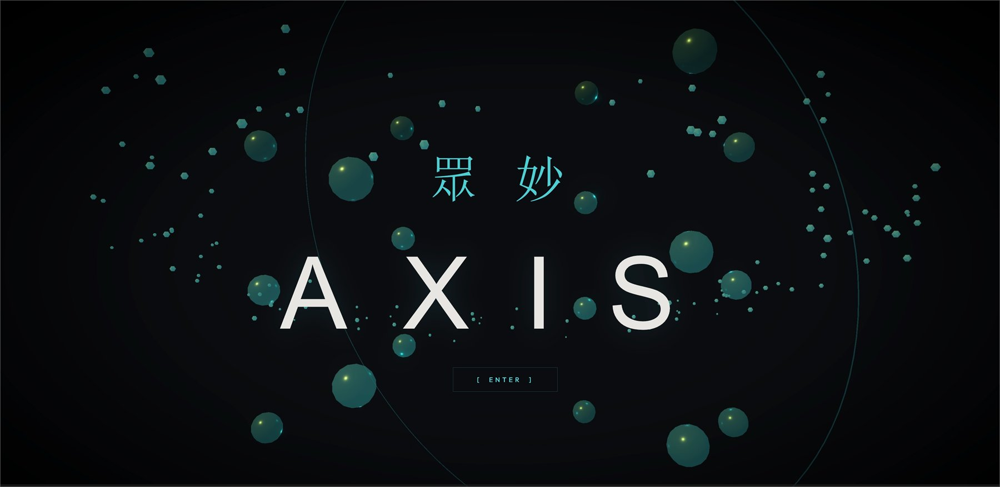
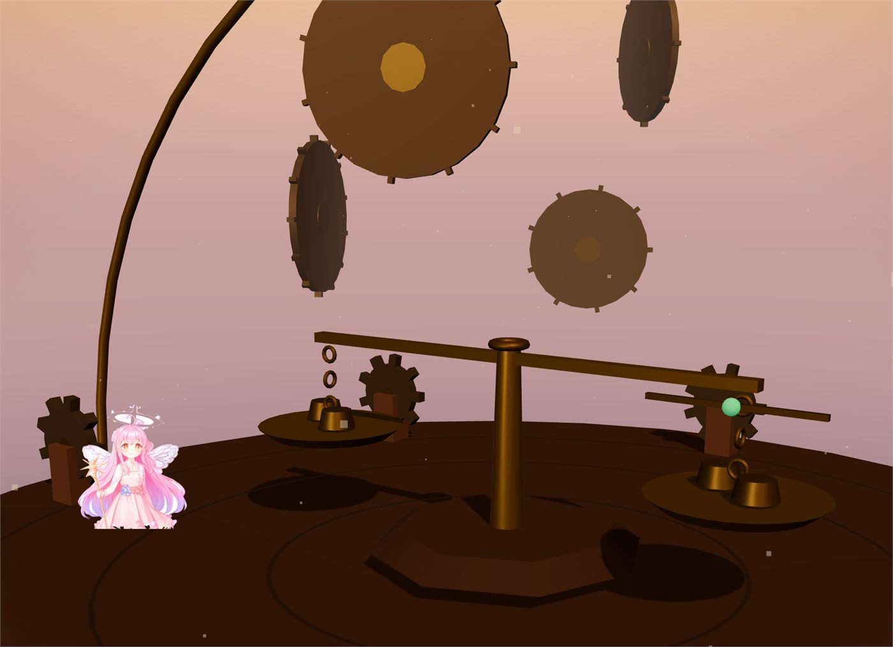
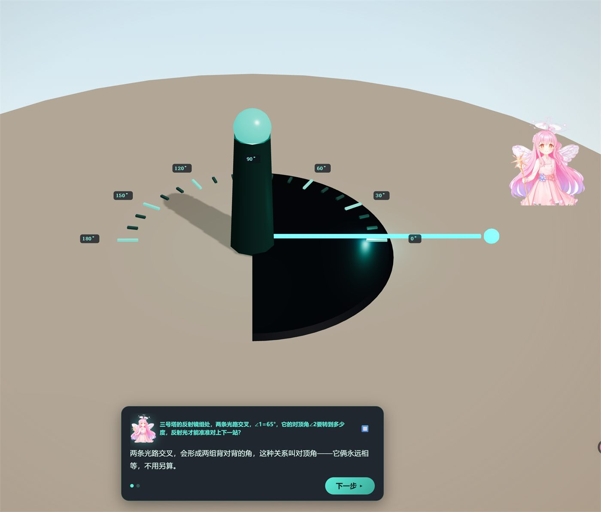
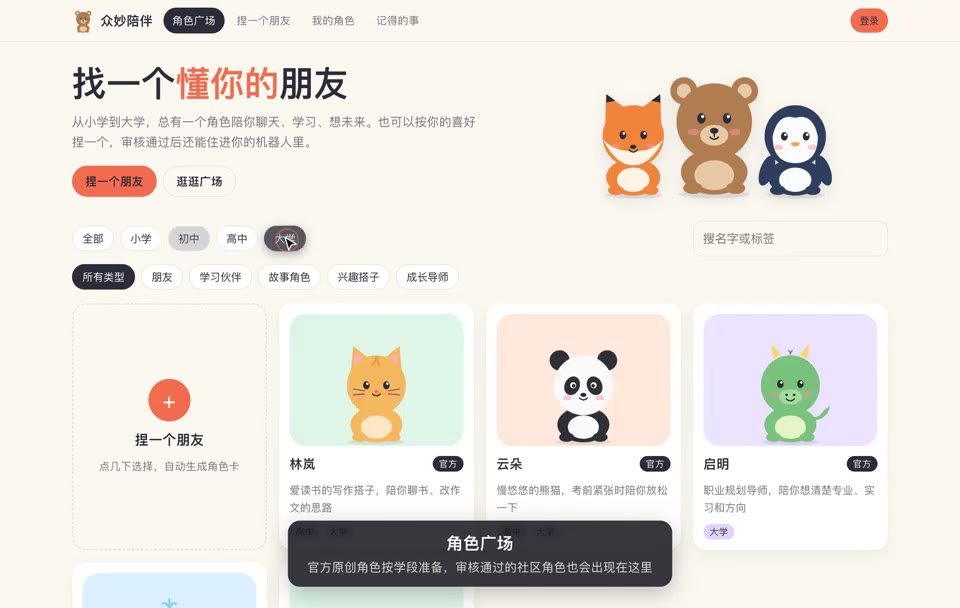
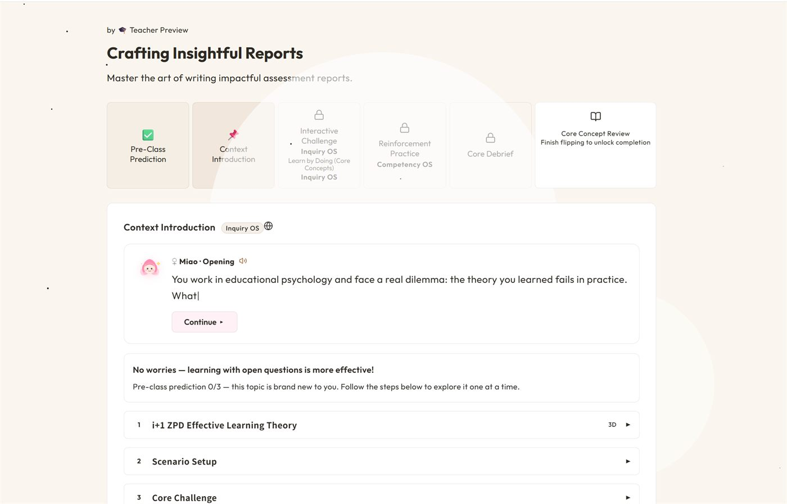
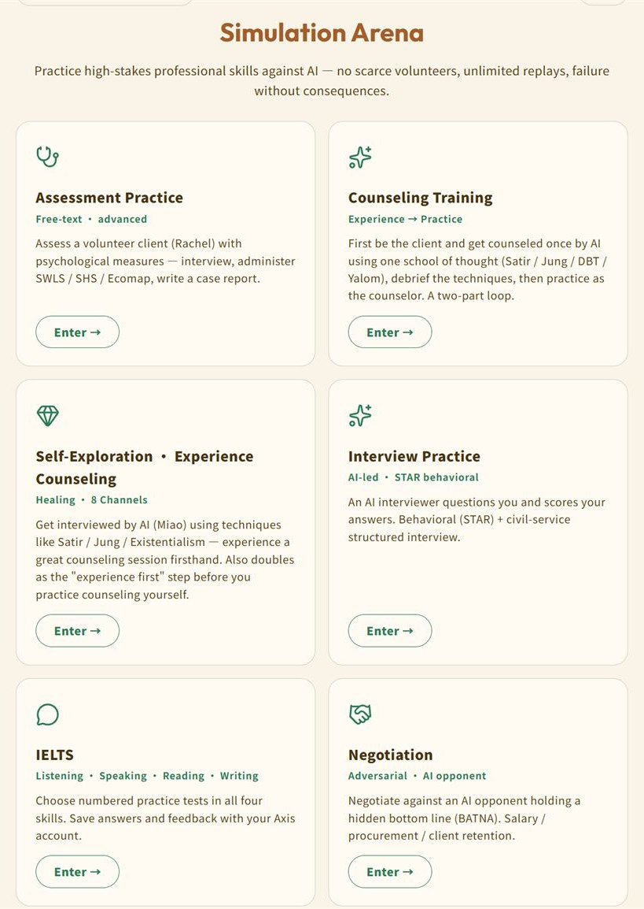
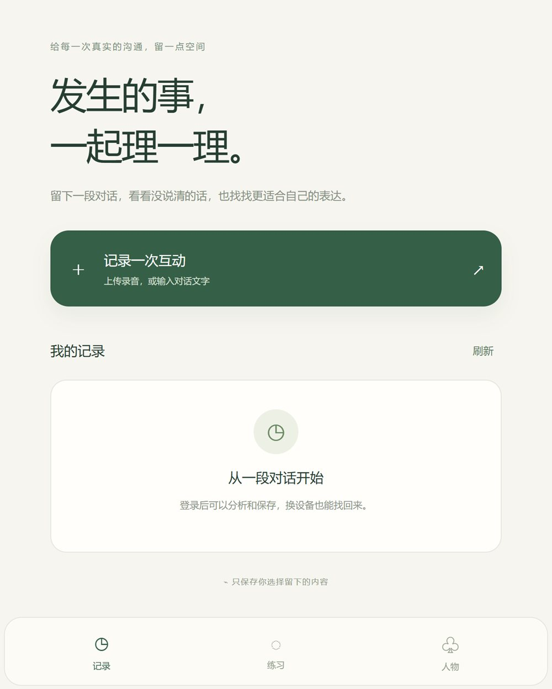

Featured Work
Axis AI
Teachers upload the material they already have. The platform turns it into a lesson you play. My job is the point where content becomes gameplay.

Overview
Axis AI (众妙之轴) is a learning platform that turns course material into something the learner acts on: 3D lessons for middle-school mathematics, case-based university courses, a character companion that is moving onto a robot, and tools for practising everyday conversations.
This case study explores seven product directions developed by the Axis AI team, highlighting my contributions to game design, interactive learning, visual development, and product iteration. They sit at very different stages, from live courseware to early prototypes and design proposals, and each section states which one it is, what I designed, and what the wider team built.
A 3D lesson is not automatically a game. If the interaction is just walk to a question and click an answer, the 3D space is decoration.
My Contributions
- Product and course planning. Learning flows, interaction structure, and how an individual lesson should behave.
- Game and interaction design. Mechanics, feedback, and player flow built around a specific learning goal.
- 3D art and UI. Lesson scenes and visual assets, and proposals for how the platform presents information and entry points.
- Courseware QA. Testing English-course flows, finding high-impact bugs, and validating fixes across navigation, localization, reports, and interaction logic.
- Production and promotion. Coordinating work across design, art, and engineering; running the Xiaohongshu account and producing the platform demos.
The AI models, memory backend, robot software, and platform engineering are built by the wider team. Each module below separates what I designed or tested from what the team built.
01
Middle School Mathematics
Interactive 3D Learning
Middle-school mathematics becomes easier to reason about when its relationships can be tested directly. I work on interactive 3D lessons where learners manipulate balance scales, levers, and geometric demonstrations to see mathematical rules in action. The interaction is part of the explanation, rather than a decorative layer around a quiz.
- Balance and equations. Two scales have to agree before the answer resolves, so the learner solves a pair of equations instead of picking an option.
- Levers. The same physical metaphor carries across topics, so a learner reuses an interaction they already understand rather than meeting a new interface in every lesson.
- Vertically opposite angles. A beam of light rotates against a protractor and the opposite angles stay equal as it turns. The rule becomes something you watch hold rather than something you memorise.



In order: the paired balance scales, a lever scene from the same family of lessons, and the rotating light beam on a protractor.
02
XiaoMiao Learning Companion
Embodied AI and Character-Based Learning
XiaoMiao explores how an AI learning companion can move between a web-based character experience and an embodied robot interface. The current prototype demonstrates character selection, conversation, memory-related interactions, and the developing connection between the two environments. My design work focuses on approachable character and physical forms, screen integration, and interactions that make learning support feel natural in everyday settings.

- A moderated character plaza. Student-oriented characters can be filtered by school stage, from primary school to university, and by type: friend, study partner, story character, hobby buddy, or mentor.
- Making a character. A student builds a friend by tapping through a few choices, and the model drafts a character card from them. It goes through review before it can appear publicly or on a robot.
- Memory, off by default. Families decide whether it is on. The companion keeps a few short notes drawn from the student’s own words rather than the conversation itself, leaves out details such as addresses, phone numbers, and health information, and can be asked to forget.
- Rules above the persona. Safety rules sit on the server where no character can override them: no romantic role-play, dangerous topics refused, and homework guided rather than written for the student.
- From screen to robot. Families add reviewed, stage-appropriate characters to the robot from their family learning account, and parents set limits such as daily time. In the prototype this robot-facing interface is demonstrated on a computer.
- Continuity. The team has designed a compatible structured-memory approach so a character can carry context between web conversations and robot interactions. That continuity is still being built.
My design work
I designed the embodied companion around how a child might actually live with the object: small enough to carry, rounded and soft to the touch, stable on a desk, and comfortable to keep nearby at bedtime. It is deliberately not a mini industrial robot, with no sharp structures and no copy of a real animal or an existing character. Alongside the form, I work on character direction, where the screen sits in the body, and the learning and everyday-companionship situations it has to support. The character platform, AI models, memory backend, and robot software are built by the wider team.
03
Gemini — Wellness & Reflection
双子星疗愈舱
Gemini is a quiet space for pausing and reflecting, built around an AI companion conversation. Rather than opening on a chat box, it opens on a place: the user settles into an ambient environment first, and the conversation happens inside it.
- Environment first. The user picks an ambient scene, such as a mountain-forest setting, and can switch background sound on or off.
- An optional check-in. A five-question, roughly thirty-second questionnaire asks how the user tends to respond to difficulty, for example whether they analyse, talk to someone, act first, or wait. The answers adjust the companion’s conversation style, and the check-in can be skipped.
04
Psychological Assessment
Case-Based Learning Through Investigation
Axis platform The course itself requires a class account.
Developed with Dr. Chieh Li for a Northeastern doctoral course, this pilot reframes psychological assessment as detective work. The mapping is deliberate: assessment already asks the learner to gather evidence, set noise aside, understand a person in context, and connect information across sources. So the learner does that work instead of reading a finished case.
- Evidence runner. The player steers a folder, collecting evidence and dodging distractors, which turns information filtering into an immediate physical action.
- Jordan, a visual novel. Learners build an understanding of the digital client, Jordan, through context and dialogue rather than receiving the whole case at once.
- Ranking and the evidence board. Learners rank and analyse what they have found, then connect clues on a corkboard with red string, so they build the relationships rather than being handed them.
- Report and reflect. The course runs from a pre-class prediction to a core debrief, where learners report a conclusion and look back at how they reached it.

05
Zhongmiao Academy
Game-Based University Learning 众妙大学堂
Zhongmiao Academy is the university side of the platform, and a different problem from the middle-school lessons. An instructor brings the material they already teach from, and the platform rebuilds it as interactive 3D courseware. Students then practise inside situations instead of reviewing slides.
- Courseware from existing material. The instructor side generates and structures 3D interactive courseware from course content, so a lesson starts from what the teacher already has.
- Scenario-based practice. A practice arena holds simulation modules such as assessment practice, counselling training, interview practice, and negotiation. The psychological assessment pilot in module 04 is one course built this way.
- Iteration and QA. I test course flows before they reach students. On the English course that meant finding high-impact bugs and validating fixes across navigation, localization, reports, and interaction logic.
My part
Course planning, interaction design for individual activities, UI feedback, courseware testing, and production coordination between design, art, and engineering. The platform and its generation pipeline are built by the wider team.
06
IELTS Preparation
Adaptive Learning Concept and Prototype
The original IELTS direction separated practice into listening, speaking, reading, and writing. That still treats the product like a content library: it knows which category a learner picked, but not what they already know, when their exam is, or how much time they can realistically study. The language apps I tested hit the same wall. Even with a chosen starting level, the path stays generic.
Existing
An IELTS module prototype inside the platform’s practice arena, pictured here. The team is iterating on it against the proposal below.

My proposal
- Initial diagnostic. Start from what the learner already knows instead of sending everyone down the same path.
- Deadline-aware plan. An exam in three months becomes a three-month cycle of concrete daily work.
- Flexible daily tasks. Learners can rest at weekends or add practice when life changes, and the plan adjusts.
- AI study companion. Optional reminders and continuity. Progress earns points for light cosmetic customisation.
- Optional social features. A leaderboard can make progress visible. System-generated participants should never be presented as real users.
- Low-pressure speaking rehearsal. An approachable avatar as a practice partner, for learners who are strong until an examiner is in front of them.
07
XiaoMiao Gen Z
Conversation Reflection and Rehearsal
XiaoMiao Gen Z helps young people revisit everyday conversations, understand what may have happened, and rehearse how to respond next time. The experience connects conversation review, explainable practice recommendations, and goal-based role-play into a repeatable learning loop.
- Conversation review. Upload audio or video, or type the conversation in. The user checks the recognised transcript, marks which speaker they are, and reads observations and possible interpretations grounded in what was actually said. The analysis can be saved to a personal record.
- Daily recommendations. Saved record titles and tags drive suggested practice, and “Why this?” shows which earlier record a suggestion came from.
- Conversation rehearsal. The user picks a saved record and a goal, such as setting a boundary, expressing a feeling, or negotiating an arrangement, then practises a text conversation with a simulated counterpart. The review measures the practice against that goal and the user’s own replies, quotes one sentence, and suggests another way to say it.

Media Coverage
Boston Bilingual Pioneer Media · September 2026
Boston Bilingual Pioneer Media covered two directions of our work: the Axis AI interactive learning platform, and our ongoing development of embodied learning companions.
The platform turns learning content into interactive experiences built around action, feedback, and exploration rather than passive presentation. The coverage also highlighted our embodied-learning direction, where we are exploring companion robots that can extend learning beyond a conventional screen-based experience.
The companion robots are still in development. My work in that direction focuses on how physical form, screen placement, interaction, and everyday companionship can support a learning experience that feels approachable rather than industrial.
Project Support
I used this project as the basis of my application for Northeastern University’s PEAK Fellowship, and I am currently using it in an ongoing NEA Grants for Arts Projects application.